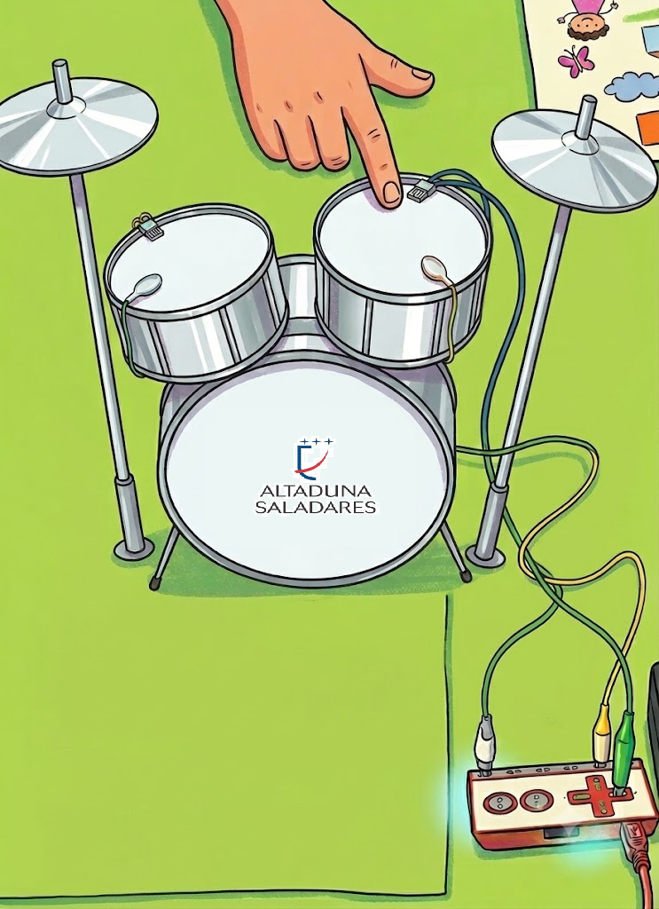
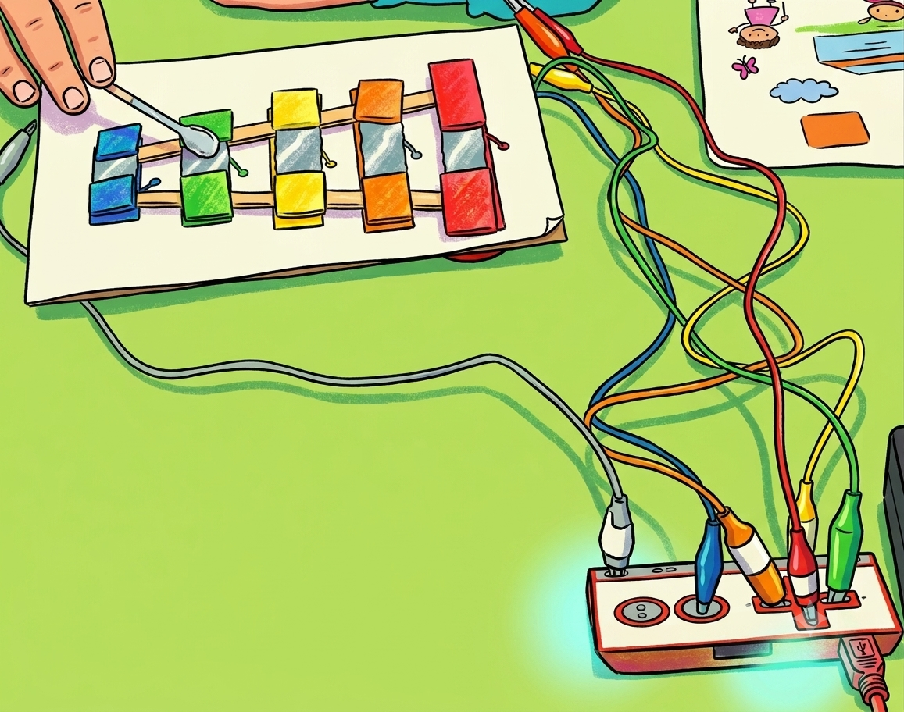
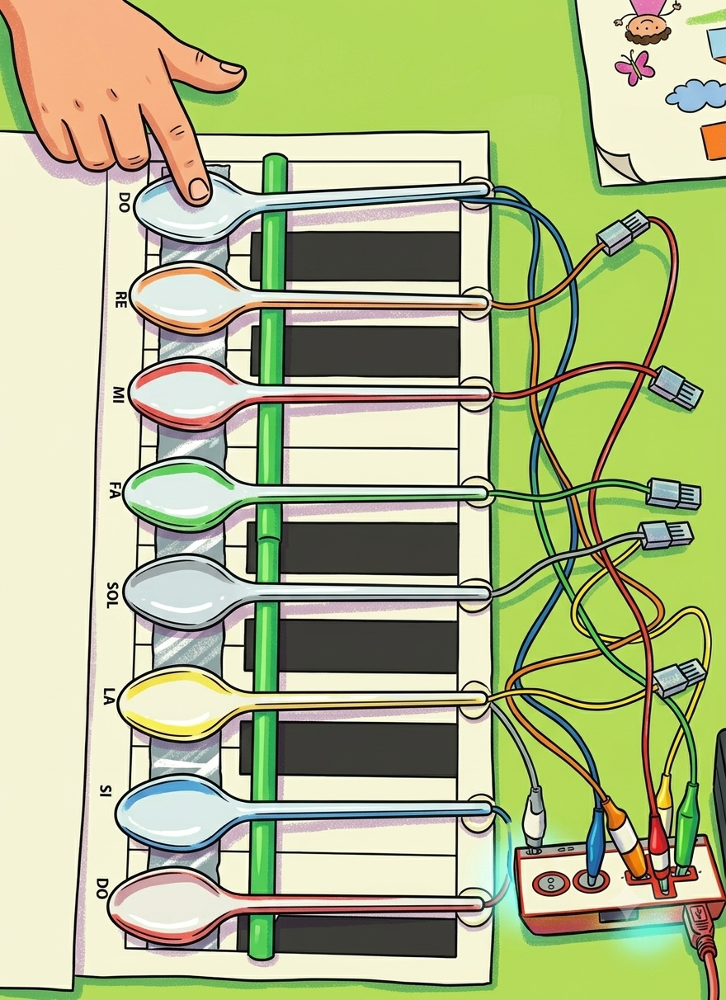
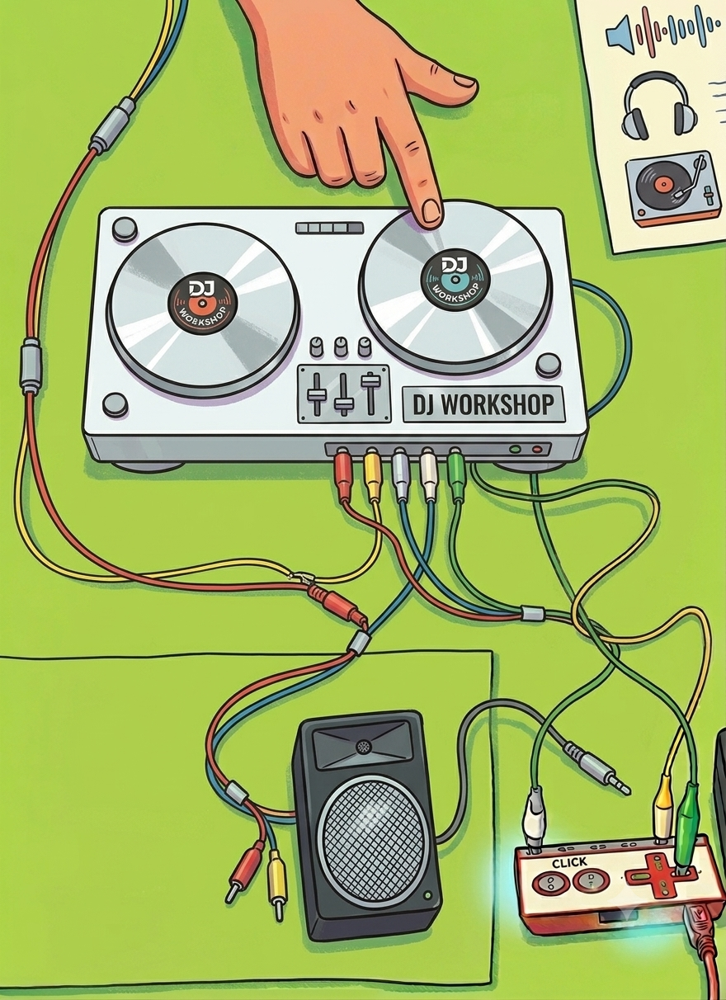

Un taller 100% práctico, donde los alumnos de 7 a 11 años, programarán su aplicación en Scratch y conectan la tarjeta Makey Makey a objetos cotidianos —cartón, tapones, papel de aluminio— para crear una batería, un xilófono, un piano y su propia mesa de DJ. ¡Y suenan de verdad!
Actividad guiada por profesor especializado · Grupos reducidos · 7–11 años




Este taller es ideal si tu hijo:
No hace falta saber programar ni tocar ningún instrumento. Empezamos desde cero y cada niño avanza a su ritmo.
7 a 11 años
Rango de edad
Grupos reducidos
Atención personalizada
0 experiencia
Requerida
Se lo lleva
Su proyecto y manualidad (no incluido Makey Makey)
Cada alumno elige su instrumento favorito, lo construye y lo programa hasta que suene como uno de verdad.
🎯 El taller sigue una progresión: cuanto más avanza, más complejo es el instrumento.
Cuatro pads conductores que suenan a bombo, caja, plato y tom con solo tocarlos con la mano.
Materiales:
Tarjeta Makey Makey · Cables cocodrilo · Tapones· Papel de aluminio · Ordenador con Scratch
Ocho teclas conductoras, afinadas como un xilófono real.
Materiales:
Makey Makey · Palos de madera · Goma espuma · Cables cocodrilo · Scratch
Un teclado de una octava hecho con cucharas de madera y papel de aluminio sobre la mesa.
Materiales:
Tarjeta Makey Makey · Cables cocodrilo · Tapones· Papel de aluminio · Ordenador con Scratch
La mesa dispone de 5 pads, con un efecto difrente, para crear su propia sesión en directo.
Materiales:
Tarjeta Makey Makey · Cables cocodrilo · Tapones· Papel de aluminio · Ordenador con Scratch
Programan en bloques con Scratch: secuencias, bucles y eventos de sonido.
Descubren cómo un circuito conductor puede sustituir a un teclado.
Reconocen ritmos y notas mientras construyen sus propios instrumentos.
Conectan pinzas, cables y objetos con cuidado y paciencia.
Si algo no suena, aprenden a revisar el circuito y el código: el método del ingeniero.
Cada instrumento exige atención al detalle para que suene bien.
Ajustan su proyecto hasta conseguir el sonido exacto que buscan.
Terminan el taller habiendo creado algo propio, de la nada.
Todo el material está incluido en el taller.
Tarjeta Makey Makey
El cerebro del instrumento
Cables cocodrilo
Conectan objeto y tarjeta
Objetos conductores
Fruta, plastilina, aluminio
Ordenador y Scratch
Donde programan el sonido
Los objetos conductores varían según el instrumento:
Cada niño construye su propio instrumento de principio a fin, con la guía del profesor. Todo de forma sencilla, visual y muy sonora.
Diseñamos el sonido
El profesor explica qué instrumento van a crear y cómo va a sonar
Programamos y conectamos
Programan en Scratch y conectan la Makey Makey a los objetos
¡A tocar!
Prueban su instrumento, ajustan el sonido y lo tocan en directo
Cuándo
📅 Septiembre 2026
Dónde
📍 Aula Maker de Colegio Saladares
Edad
👦 7 a 11 años
Disponibilidad
👥 Plazas limitadas
Construyen su instrumento
Cada niño construye su propio instrumento
Programan su instrumento
Bloque a bloque en Scratch, con ayuda del profesor
Conectan el circuito
Con cables lo conectan a la placa Makey Makey
¡Suena su instrumento!
Lo tocan en directo delante de sus compañeros
Grupos reducidos para garantizar atención personalizada.
Reserva ahora — ¡le prepararemos su instrumento!
📅 Septiembre 2026 · 📍 Aula Maker Colegio Saladares · 👦 7–11 años